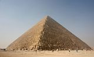 The Great Pyramid of Giza (also known as the Pyramid of Khufu or the Pyramid of Cheops) is the oldest and largest of the three pyramids in the Giza Necropolis bordering what is now El Giza, Egypt. It is the oldest of the Seven Wonders of the Ancient World, and the only one to remain largely intact. Egyptologists believe that the pyramid was built as a tomb for fourth dynasty Egyptian Pharaoh Khufu (Cheops in Greek) over a 10 to 20-year period concluding around 2560 BCE. Initially at 146.5 metres (481 feet), the Great Pyramid was the tallest man-made structure in the world for over 3,800 years. Originally, the Great Pyramid was covered by casing stones that formed a smooth outer surface; what is seen today is the underlying core structure. Some of the casing stones that once covered the structure can still be seen around the base. There have been varying scientific and alternative theories about the Great Pyramid's construction techniques. Most accepted construction hypotheses are based on the idea that it was built by moving huge stones from a quarry and dragging and lifting them into place.
It is believed the pyramid was built as a tomb for fourth dynasty Egyptian pharaoh Khufu and was constructed over a 20 year period. Khufu's vizier, Hemon, or Hemiunu, is believed by some to be the architect of the Great Pyramid. It is thought that, at construction, the Great Pyramid was originally 280 Egyptian cubits tall, 146.5 metres (480.6 ft) but with erosion and absence of its pyramidion, its present height is 138.8 metres (455.4 ft). Each base side was 440 cubits, 230.4 metres (755.9 ft) long. The mass of the pyramid is estimated at 5.9 million tonnes. The volume, including an internal hillock, is roughly 2,500,000 cubic metres. Based on these estimates, building this in 20 years would involve installing approximately 800 tonnes of stone every day. Similarly, since it consists of an estimated 2.3 million blocks, completing the building in 20 years would involve moving an average of more than 12 of the blocks into place each hour, day and night. The first precision measurements of the pyramid were made by Egyptologist Sir Flinders Petrie in 1880–82 and published as The Pyramids and Temples of Gizeh. Almost all reports are based on his measurements. Many of the casing stones and inner chamber blocks of the Great Pyramid were fit together with extremely high precision. Based on measurements taken on the north eastern casing stones, the mean opening of the joints is only 0.5 millimetres wide (1/50th of an inch).
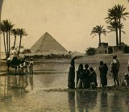 The pyramid remained the tallest man-made structure in the world for over 3,800 years, unsurpassed until the 160-metre-tall spire of Lincoln Cathedral was completed c. 1300. The accuracy of the pyramid's workmanship is such that the four sides of the base have an average error of only 58 millimetres in length. The base is horizontal and flat to within ±15 mm. The sides of the square base are closely aligned to the four cardinal compass points (within 4 minutes of arc) based on true north, not magnetic north,[10] and the finished base was squared to a mean corner error of only 12 seconds of arc. The completed design dimensions, as suggested by Petrie's survey and subsequent studies, are estimated to have originally been 280 cubits high by 440 cubits long at each of the four sides of its base. The ratio of the perimeter to height of 1760/280 cubits equates to 2π to an accuracy of better than 0.05% (corresponding to the well-known approximation of π as 22/7). Some Egyptologists consider this to have been the result of deliberate design proportion. Verner wrote, "We can conclude that although the ancient Egyptians could not precisely define the value of π, in practice they used it". Petrie, author of Pyramids and Temples of Gizeh concluded: "but these relations of areas and of circular ratio are so systematic that we should grant that they were in the builder's design". Others have argued that the Ancient Egyptians had no concept of pi and would not have thought to encode it in their monuments. They believe that the observed pyramid slope may be based on a simple seked slope choice alone, with no regard to the overall size and proportions of the finished building.
The Great Pyramid consists of an estimated 2.3 million limestone blocks with most believed to have been transported from nearby quarries. The Tura limestone used for the casing was quarried across the river. The largest granite stones in the pyramid, found in the "King's" chamber, weigh 25 to 80 tonnes and were transported from Aswan, more than 800 kilometres away. Traditionally, ancient Egyptians cut stone blocks by hammering wooden wedges into the stone which were then soaked with water. As the water was absorbed, the wedges expanded, causing the rock to crack. Once they were cut, they were carried by boat either up or down the Nile River to the pyramid. It is estimated that 5.5 million tonnes of limestone, 8,000 tonnes of granite (imported from Aswan), and 500,000 tonnes of mortar were used in the construction of the Great Pyramid.
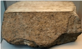 At completion, the Great Pyramid was surfaced by white "casing stones" – slant-faced, but flat-topped, blocks of highly polished white limestone. These were carefully cut to what is approximately a face slope with a seked of 5½ palms to give the required dimensions. Visibly, all that remains is the underlying stepped core structure seen today. In AD 1300, a massive earthquake loosened many of the outer casing stones, which were then carted away by Bahri Sultan An-Nasir Nasir-ad-Din al-Hasan in 1356 to build mosques and fortresses in nearby Cairo. The stones can still be seen as parts of these structures. Later explorers reported massive piles of rubble at the base of the pyramids left over from the continuing collapse of the casing stones, which were subsequently cleared away during continuing excavations of the site. Nevertheless, a few of the casing stones from the lowest course can be seen to this day in situ around the base of the Great Pyramid, and display the same workmanship and precision as has been reported for centuries. Petrie also found a different orientation in the core and in the casing measuring 193 centimetres ± 25 centimetres. He suggested a redetermination of north was made after the construction of the core, but a mistake was made, and the casing was built with a different orientation. Petrie related the precision of the casing stones as to being "equal to opticians' work of the present day, but on a scale of acres" and "to place such stones in exact contact would be careful work; but to do so with cement in the joints seems almost impossible". It has been suggested it was the mortar (Petrie's "cement") that made this seemingly impossible task possible, providing a level bed which enabled the masons to set the stones exactly.
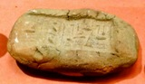 Many alternative, often contradictory, theories have been proposed regarding the pyramid's construction techniques. Many disagree on whether the blocks were dragged, lifted, or even rolled into place. The Greeks believed that slave labour was used, but modern discoveries made at nearby worker's camps associated with construction at Giza suggest it was built instead by tens of thousands of skilled workers. Verner posited that the labor was organized into a hierarchy, consisting of two gangs of 100,000 men, divided into five zaa or phyle of 20,000 men each, which may have been further divided according to the skills of the workers.
One mystery of the pyramid's construction is its planning. John Romer suggests that they used the same method that had been used for earlier and later constructions, laying out parts of the plan on the ground at a 1 to 1 scale. He writes that "such a working diagram would also serve to generate the architecture of the pyramid with precision unmatched by any other means." He also argues for a 14 year time span for its construction.
A modern construction management study in association with Mark Lehner and other Egyptologists, estimated that the total project required an average workforce of 14,567 people and a peak workforce of 40,000. Without the use of pulleys, wheels, or iron tools, they used critical path analysis to suggest the Great Pyramid was completed from start to finish in approximately 10 years.
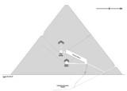 The original entrance to the Great Pyramid is 17 metres (56 ft) vertically above ground level and 7.29 metres (23.9 ft) east of the center line of the pyramid. From this original entrance there is a Descending Passage .96 metres (3.1 ft) high and 1.04 metres (3.4 ft) wide which goes down at an angle of 26° 31'23" through the masonry of the pyramid and then into the bedrock beneath it. After 105.23 metres (345.2 ft), the passage becomes level and continues for an additional 8.84 metres (29.0 ft) to the lower Chamber, which appears not to have been finished. There is a continuation of the horizontal passage in the south wall of the lower chamber; there is also a pit dug in the floor of the chamber. Some Egyptologists suggest this Lower Chamber was intended to be the original burial chamber, but Pharaoh Khufu later changed his mind and wanted it to be higher up in the pyramid.
At 28.2 metres (93 ft) from the entrance is a square hole in the roof of the Descending Passage. Originally concealed with a slab of stone, this is the beginning of the Ascending Passage. The Ascending Passage is 39.3 metres (129 ft) long, as wide and high as the Descending Passage and slopes up at almost precisely the same angle. The lower end of the Ascending Passage is closed by three huge blocks of granite, each about 1.5 metres (4.9 ft) long. At the start of the Grand Gallery on the right-hand side there is a hole cut in the wall (and now blocked by chicken wire). This is the start of a vertical shaft which follows an irregular path through the masonry of the pyramid to join the Descending Passage. Also at the start of the Grand Gallery there is a Horizontal Passage leading to the "Queen's Chamber". The passage is 1.1m (3'8") high for most of its length, but near the chamber there is a step in the floor, after which the passage is 1.73 metres (5.7 ft) high.
The Queen's Chamber is exactly half-way between the north and south faces of the pyramid and measures 5.75 metres (18.9 ft) north to south, 5.23 metres (17.2 ft) east to west and has a pointed roof with an apex 6.23 metres (20.4 ft) above the floor. At the eastern end of the chamber there is a niche 4.67 metres (15.3 ft) high. The original depth of the niche was 1.04 metres (3.4 ft), but has since been deepened by treasure hunters.
In the north and south walls of the Queen's Chamber there are shafts, which unlike those in the King's Chamber that immediately slope upwards, are horizontal for around 2 m (6.6 ft) before sloping upwards. The horizontal distance was cut in 1872 by a British engineer, Waynman Dixon, who believed on the analogy of the King's Chamber that such shafts must exist. He was proved right, but because the shafts are not connected to the outer faces of the pyramid or the Queen's Chamber, their purpose is unknown. At the end of one of his shafts, Dixon discovered a ball of black diorite and a bronze implement of unknown purpose. Both objects are currently in the British Museum.
The shafts in the Queen's Chamber were explored in 1992 by the German engineer Rudolf Gantenbrink using a crawler robot of his own design which he called "Upuaut 2". After a climb of 65 m (213 ft), he discovered that one of the shafts was blocked by limestone "doors" with two eroded copper "handles". Some years later the National Geographic Society created a similar robot which drilled a small hole in the southern door, only to find another larger door behind it. The northern passage, which was difficult to navigate because of twists and turns, was also found to be blocked by a door. This research was continued in 2011 by the Djedi Project team.
In 2011 the Djedi Project team used a micro snake camera (that can see around corners) to penetrate the first door of the northern shaft, and view all the sides of the small chamber behind it. (The National Geographic Society used a camera that was only able to look straight forward.) They discovered hieroglyphs written in red paint. They were also able to scrutinize the inside of the two copper "handles" embedded in the door, and they now believe them to be of an ornamental nature. They also found the reverse side of the "door" to be finished and polished, which suggests that it was not put there just to block the shaft from debris, but rather for a more specific reason.
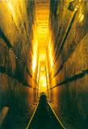 The Grand Gallery continues the slope of the Ascending Passage, but is 8.6 metres (28 ft) high and 46.68 metres (153.1 ft) long. At the base it is 2.06 metres (6.8 ft) wide, but after 2.29 metres (7.5 ft) the blocks of stone in the walls are corbelled inwards by 7.6 centimetres (3.0 in) on each side. There are seven of these steps, so at the top the Grand Gallery is only 1.04 metres (3.4 ft) wide. It is roofed by slabs of stone laid at a slightly steeper angle than the floor of the gallery, so that each stone fits into a slot cut in the top of the gallery like the teeth of a ratchet. The purpose was to have each block supported by the wall of the Gallery rather than resting on the block beneath it, which would have resulted in an unacceptable cumulative pressure at the lower end of the Gallery.
At the upper end of the Gallery on the right-hand side there is a hole near the roof which opens into a short tunnel by which access can be gained to the lowest of the Relieving Chambers. The other Relieving Chambers were discovered in 1837/8 by Colonel Howard Vyse and J. S. Perring, who dug tunnels upwards using blasting powder.
The floor of the Grand Gallery consists of a shelf or step on either side, 51 centimetres (20 in) wide, leaving a lower ramp 1.04 metres (3.4 ft) wide between them. In the shelves there are 54 slots, 27 on each side matched by vertical and horizontal slots in the walls of the Gallery. These form a cross shape that rises out of the slot in the shelf. The purpose of these slots is not known, but the central gutter in the floor of the Gallery, which is the same width as the Ascending Passage, has led to speculation that the blocking stones were stored in the Grand Gallery and the slots held wooden beams to restrain them from sliding down the passage. This, in turn, has led to the proposal that originally many more than 3 blocking stones were intended, to completely fill the Ascending Passage.
At the top of the Grand Gallery there is a step giving onto a horizontal passage approximately 1.02 metres (3.3 ft) long, in which can be detected four slots, three of which were probably intended to hold granite portcullises. Fragments of granite found by Petrie in the Descending Passage may have come from these now vanished doors.
The King's Chamber is 10.47 metres (34.4 ft) from east to west and 5.234 metres (17.17 ft) north to south. It has a flat roof 5.974 metres (19.60 ft) above the floor. 0.91 m (3.0 ft) above the floor there are two narrow shafts in the north and south walls (one is now filled by an extractor fan to try to circulate air in the pyramid). The purpose of these shafts is not clear: they appear to be aligned toward stars or areas of the northern and southern skies, but on the other hand one of them follows a dog-leg course through the masonry so there was not intention to directly sight stars through them. They were long believed by Egyptologists to be "air shafts" for ventilation, but this idea has now been widely abandoned in favor of the shafts serving a ritualistic purpose associated with the ascension of the king’s spirit to the heavens.
The King's Chamber is entirely faced with granite. Above the roof, which is formed of nine slabs of stone weighing in total about 400 tons, are five compartments known as Relieving Chambers. The first four, like the King's Chamber, have flat roofs formed by the floor of the chamber above, but the final chamber has a pointed roof. Vyse suspected the presence of upper chambers when he found that he could push a long reed through a crack in the ceiling of the first chamber. From lower to upper, the chambers are known as "Davison's Chamber", "Wellington's Chamber", "Nelson's Chamber", "Lady Arbuthnot's Chamber", and "Campbell's Chamber". It is believed that the compartments were intended to safeguard the King's Chamber from the possibility of a roof collapsing under the weight of stone above the Chamber. As the chambers were not intended to be seen, they were not finished in any way and a few of the stones still retain mason's marks painted on them. One of the stones in Campbell's Chamber bears a mark, apparently the name of a work gang, which incorporates the only reference in the pyramid to Pharaoh Khufu.
The only object in the King's Chamber is a rectangular granite "sarcophagus", one corner of which is broken. The sarcophagus is slightly larger than the Ascending Passage, which indicates that it must have been placed in the Chamber before the roof was put in place. Unlike the fine masonry of the walls of the Chamber, the sarcophagus is roughly finished, with saw marks visible in several places. This is in contrast with the finely finished and decorated sarcophagi found in other pyramids of the same period. Petrie suggested that such a sarcophagus was intended but was lost in the river on the way north from Aswan and a hurriedly made replacement was used instead.
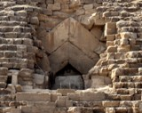 Today tourists enter the Great Pyramid via the Robbers' Tunnel dug by workmen employed by Caliph al-Ma'mun around AD 820. The tunnel is cut straight through the masonry of the pyramid for approximately 27 metres (89 ft), then turns sharply left to encounter the blocking stones in the Ascending Passage. Unable to remove these stones, the workmen tunnelled up beside them through the softer limestone of the Pyramid until they reached the Ascending Passage. It is possible to enter the Descending Passage from this point, but access is usually forbidden.
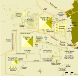 The Great Pyramid is surrounded by a complex of several buildings including small pyramids. The Pyramid Temple, which stood on the east side of the pyramid and measured 52.2 metres (171 ft) north to south and 40 metres (130 ft) east to west, has almost entirely disappeared apart from the black basalt paving. There are only a few remnants of the causeway which linked the pyramid with the valley and the Valley Temple. The Valley Temple is buried beneath the village of Nazlet el-Samman; basalt paving and limestone walls have been found but the site has not been excavated.[35][36] The basalt blocks show "clear evidence" of having been cut with some kind of saw with an estimated cutting blade 15 ft in length capable of cutting at a rate of 11⁄2 inches (38 mm) a minute. John Romer suggests this "super saw" may have had copper teeth and weighed up to 300 lbs. He theorizes such a saw could have been attached to a wooden trestle and used in conjunction with possibly vegetable oil, cutting sand, or emery or pounded quartz to cut the blocks and would have required at least a dozen men to operate it.
On the south side are the subsidiary pyramids, popularly known as Queens' Pyramids. Three remain standing to nearly full height but the fourth was so ruined that its existence was not suspected until the recent discovery of the first course of stones and the remains of the capstone. Hidden beneath the paving around the pyramid was the tomb of Queen Hetepheres, sister-wife of Sneferu and mother of Khufu. Discovered by accident by the Reisner expedition, the burial was intact, though the carefully sealed coffin proved to be empty.
The Giza pyramid complex, which includes among other structures the pyramids of Khufu, Khafre and Menkaure, is surrounded by a cyclopean stone wall, the Wall of the Crow, and outside of which Mark Lehner has discovered a worker's town, otherwise known as "The Lost City", dated by pottery styles, seal impressions, and stratigraphy to have been constructed and occupied sometime during the reigns of Khafre (2520–2494 BC) and Menkaure (2490–2472 BC). In the early 1970s, the Australian archaeologist Karl Kromer excavated a mound in the South Field of the plateau. This mound contained artifacts including mudbrick seals of Khufu, which he identified with an artisans' settlement. Mudbrick buildings just south of Khufu's Valley Temple contained mud sealings of Khufu and have been suggested to be a settlement serving the cult of Khufu after his death. A workers cemetery used at least between Khufu's reign and the end of the Fifth Dynasty was discovered south of the Wall of the Crow by Zahi Hawass in 1990.
There are three boat-shaped pits around the pyramid, of a size and shape to have held complete boats, though so shallow that any superstructure, if there ever was one, must have been removed or disassembled. In May 1954, the Egyptian archaeologist Kamal el-Mallakh discovered a fourth pit, a long, narrow rectangle, still covered with slabs of stone weighing up to 15 tons. Inside were 1,224 pieces of wood, the longest 23 metres (75 ft) long, the shortest 10 centimetres (0.33 ft). These were entrusted to a native boat builder, Haj Ahmed Yusuf, who slowly and methodically worked out how the pieces fit together. The entire process, including conservation and straightening of the warped wood, took fourteen years.
The result is a cedar-wood boat 43.6 metres (143 ft) long, its timbers held together by ropes, which is now currently housed in a special boat-shaped, air-conditioned museum beside the pyramid. During construction of this museum, which stands above the boat pit, a second sealed boat pit was discovered. It was deliberately left unopened until 2011 when excavation began on the boat.
Although succeeding pyramids were smaller, pyramid building continued until the end of the Middle Kingdom. However, as authors Briar and Hobbs claim, "all the pyramids were robbed" by the New Kingdom, when the construction of royal tombs in a desert valley, now known as the Valley of the Kings, began. Joyce Tyldesley states that the Great Pyramid itself "is known to have been opened and emptied by the Middle Kingdom", before the Arab caliph Abdullah al-Mamun entered the pyramid around AD 820.
I. E. S. Edwards discusses Strabo's mention that the pyramid "a little way up one side has a stone that may be taken out, which being raised up there is a sloping passage to the foundations." Edwards suggested that the pyramid was entered by robbers after the end of the Old Kingdom and sealed and then reopened more than once until Strabo's door was added. He adds "If this highly speculative surmise be correct, it is also necessary to assume either that the existence of the door was forgotten or that the entrance was again blocked with facing stones" in order to explain why al-Ma'mun could not find the entrance.
He also discusses a story told by Herodotus. Herodotus visited Egypt in the 5th century BC and recounts a story he was told about vaults under the pyramid built upon an island where lay the body of Cheops. Edwards notes that the pyramid had "almost certainly been opened and its contents plundered long before the time of Herodotus" and that it might have been closed again during the Twenty-sixth dynasty of Egypt when other monuments were restored. He suggests that the story told to Herodotus could have been the result of almost two centuries of telling and retelling by Pyramid guides.
Because of their fame, Khufu and his pyramid are object of several modern receptions, similar to kings and queens such as Akhenaten, Nefertiti and Tutankhamen. Khufu's historical figure appears in movies, novels and documentations. Already in 1827, female science fiction author Jane C. Loudon wrote the novel The Mummy! A Tale of the 22nd Century. The story describes the citizens of the 22nd century, which became technically high advanced at one side, but totally immoral on the other side. Only the mummy of Khufu can save them. In 1939, Nagib Mahfuz wrote the novel Khufu's Wisdom, which leans on the stories of Papyrus Westcar; In 1997, French author Guy Brachet composed the novel series Le roman des pyramides, including five volumes, of which the first two (Le temple soleil and Rêve de pierre) are picking out Khufu and his tomb as a theme. In 2004, Page Bryant wrote the Sci-Fi story The Second Coming of the Star Gods, which deals with Khufu's alleged celestial origin. The novel The Legend of The Vampire Khufu, written by Raymond Mayotte in 2010, deals with king Khufu awakening in his pyramid as a vampire.
Well known cinematic movies, which deal with Khufu or at least have the Great Pyramid as a theme, are Howard Hawks' Land of the Pharaohs from 1955, a fictional account of the building of the Great Pyramid of Khufu, and Roland Emmerich's Stargate from 1994, in which an extraterrestrial device is found near the pyramids.
Khufu and his pyramid are furthermore object of pseudoscientific theories which deal with the idea that Khufu's pyramid was built with the help of extraterrestrials and that Khufu simply seized and re-used the monument, ignoring all archaeological evidences or even falsifying them.
Khufu and his pyramid are even thematized in several computer games such as Tomb Raider - The last revelation, in which the player must enter Khufu's pyramid and face the god Seth as the final boss. Another example is Duck Tales 2 for the Game Boy. In this game the player must guide Uncle Scrooge through a trap-loaded Khufu's pyramid.
The gardens were attributed to the Neo-Babylonian king Nebuchadnezzar II, who ruled between 605 and 562 BC. He is reported to have constructed the gardens to please his homesick wife Amytis of Media, who longed for the plants of her homeland. The gardens were said to have been destroyed by several earthquakes after the 2nd century BC.[citation needed] The Hanging Gardens of Babylon are documented by ancient Greek and Roman writers, including Strabo, Diodorus Siculus, and Quintus Curtius Rufus. However, no cuneiform texts describing the Hanging Gardens are extant, and no definitive archaeological evidence concerning their whereabouts has been found.
Ancient writers describe the possible use of an Archimedes screw-like process to irrigate the terraced gardens. Estimates based on descriptions of the gardens in ancient sources say the Hanging Gardens would have required a minimum amount of 8,200 gallons (37,000 litres) of water per day. Nebuchadnezzar II is reported to have used massive slabs of stone, a technique not otherwise attested in Babylon, to prevent the water from eroding the ground.
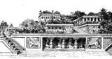 In ancient writings the Hanging Gardens of Babylon were first described by Berossus, a Babylonian priest of Marduk who lived in the late 4th century BC, although his books are known only from quotations by later authors (e.g., Flavius Josephus). There are five principal writers (including Berossus) whose descriptions of Babylon are extant in some form today. These writers concern themselves with the size of the Hanging Gardens, why and how they were built, and how the gardens were irrigated.
Josephus (ca. 37–100 AD) quoted Berossus (writing ca. 280 BC), when he described the gardens. Berossus described the reign of Nebuchadnezzar II, the king he credits with the construction of the Hanging Gardens.
“In this palace he erected very high walks, supported by stone pillars; and by planting what was called a pensile paradise, and replenishing it with all sorts of trees, he rendered the prospect an exact resemblance of a mountainous country. This he did to gratify his queen, because she had been brought up in Media, and was fond of a mountainous situation.”
Diodorus Siculus (active ca. 60–30 BC) seems to have consulted the early 4th century BC texts of Ctesias of Cnidus for his description of the Hanging Gardens:
"There was also, beside the acropolis, the Hanging Garden, as it is called, which was built, not by Semiramis, but by a later Syrian king to please one of his concubines; for she, they say, being a Persian by race and longing for the meadows of her mountains, asked the king to imitate, through the artifice of a planted garden, the distinctive landscape of Persia. The park extended four plethra on each side, and since the approach to the garden sloped like a hillside and the several parts of the structure rose from one another tier on tier, the appearance of the whole resembled that of a theatre. When the ascending terraces had been built, there had been constructed beneath them galleries which carried the entire weight of the planted garden and rose little by little one above the other along the approach; and the uppermost gallery, which was fifty cubits high, bore the highest surface of the park, which was made level with the circuit wall of the battlements of the city. Furthermore, the walls, which had been constructed at great expense, were twenty-two feet thick, while the passage-way between each two walls was ten feet wide. The roof above these beams had first a layer of reeds laid in great quantities of bitumen, over this two courses of baked brick bonded by cement, and as a third layer of covering of lead, to the end that the moisture from the soil might not penetrate beneath. On all this again earth had been piled to a depth sufficient for the roots of the largest trees; and the ground, when levelled off, was thickly planted with trees of every kind that, by their great size or other charm, could give pleasure to the beholder. And since the galleries, each projecting beyond another, all received the light, they contained many royal lodgings of every description; and there was one gallery which contained openings leading from the topmost surface and machines for supplying the gardens with water, the machines raising the water in great abundance from the river, although no one outside could see it being done. Now this park, as I have said, was a later construction."
Quintus Curtius Rufus (active 1st century AD) referred to the writings of Cleitarchus, a 4th century BC historian of Alexander the Great, when writing his own History of Alexander the Great:
"The Babylonians also have a citadel twenty stades in circumference. The foundations of its turrets are sunk thirty feet into the ground and the fortifications rise eighty feet above it at the highest point. On its summit are the hanging gardens, a wonder celebrated by the fables of the Greeks. They are as high as the top of the walls and owe their charm to the shade of many tall trees. The columns supporting the whole edifice are built of rock, and on top of them is a flat surface of squared stones strong enough to bear the deep layer of earth placed upon it and the water used for irrigating it. So stout are the trees the structure supports that their trunks are eight cubits thick and their height as much as fifty feet; they bear fruit as abundantly as if they were growing in their natural environment. And although time with its gradual decaying processes is as destructive to nature's works as to man's, even so this edifice survives undamaged, despite being subjected to the pressure of so many tree-roots and the strain of bearing the weight of such a huge forest. It has a substructure of walls twenty feet thick at eleven foot intervals, so that from a distance one has the impression of woods overhanging their native mountains. Tradition has it that it is the work of a Syrian king who ruled from Babylon. He built it out of love for his wife who missed the woods and forests in this flat country and persuaded her husband to imitate nature's beauty with a structure of this kind."
Strabo (ca. 64 BC – 21 AD) described of the Hanging Gardens as follows, in a passage that was thought to be based on the lost account of Onesicritus from the 4th century BC:
"Babylon, too, lies in a plain; and the circuit of its wall is three hundred and eighty-five stadia. The thickness of its wall is thirty-two feet; the height thereof between the towers is fifty cubits; that of the towers is sixty cubits; and the passage on top of the wall is such that four-horse chariots can easily pass one another; and it is on this account that this and the hanging garden are called one of the Seven Wonders of the World. The garden is quadrangular in shape, and each side is four plethra in length. It consists of arched vaults, which are situated, one after another, on checkered, cube-like foundations. The checkered foundations, which are hollowed out, are covered so deep with earth that they admit of the largest of trees, having been constructed of baked brick and asphalt – the foundations themselves and the vaults and the arches. The ascent to the uppermost terrace-roofs is made by a stairway; and alongside these stairs there were screws, through which the water was continually conducted up into the garden from the Euphrates by those appointed for this purpose, for the river, a stadium in width, flows through the middle of the city; and the garden is on the bank of the river."
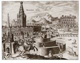 Philo of Byzantium (writing ca. 250 BC), whose list of the Seven Wonders of the Ancient World we use today, was credited with the following description:
"The Hanging Gardens [is so-called because it] has plants cultivated at a height above ground level, and the roots of the trees are embedded in an upper terrace rather than in the earth. This is the technique of its construction. The whole mass is supported on stone columns, so that the entire underlying space is occupied by carved column bases. The columns carry beams set at very narrow intervals. The beams are palm trunks, for this type of wood – unlike all others – does not rot and, when it is damp and subjected to heavy pressure, it curves upwards. Moreover it does itself give nourishment to the root branches and fibres, since it admits extraneous matter into its folds and crevices. This structure supports an extensive and deep mass of earth, in which are planted broad-leaved trees of the sort that are commonly found in gardens, a wide variety of flowers of all species and, in brief, everything that is most agreeable to the eye and conducive to the enjoyment of pleasure. The whole area is ploughed in just the same way as solid ground, and is just as suitable as other soil for grafting and propagation. Thus it happens that a ploughed field lies above the heads of those who walk between the columns below. Yet while the upper surface of the earth is trampled underfoot, the lower and denser soil closest to the supporting framework remains undisturbed and virgin. Streams of water emerging from elevated sources flow partly in a straight line down sloping channels, and are partly forced upwards through bends and spirals to gush out higher up, being impelled through the twists of these devices by mechanical forces. So, brought together in frequent and plentiful outlets at a high level, these waters irrigate the whole garden, saturating the deep roots of the plants and keeping the whole area of cultivation continually moist. Hence the grass is permanently green, and the leaves of trees grow firmly attached to supple branches, and increasing in size and succulence with the constant humidity. For the root [system] is kept saturated and sucks up the all-pervading supply of water, wandering in interlaced channels beneath the ground, and securely maintaining the well-established and excellent quality of trees. This is a work of art of royal luxury [lit. 'riotous living'], and its most striking feature is that the labor of cultivation is suspended above the heads of the spectators."
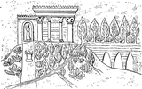 There is some controversy as to whether the Hanging Gardens were an actual construction or a poetic creation, owing to the lack of documentation in contemporaneous Babylonian sources. There is also no mention of Nebuchadnezzar's wife Amyitis (or any other wives), although a political marriage to a Median or Persian would not have been unusual. Herodotus, writing about Babylon closest in time to Nebuchadnezzar II, does not mention the Hanging Gardens in his Histories. However, it is possible that cuneiform texts on the Hanging Gardens may yet be found.
To date, no archaeological evidence has been found at Babylon for the Hanging Gardens. It is possible that evidence exists beneath the Euphrates, which cannot be excavated safely at present. The river flowed east of its current position during the time of Nebuchadnezzar II, and little is known about the western portion of Babylon.
A recent theory proposes that the Hanging Gardens of Babylon were actually constructed by the Assyrian king Sennacherib (reigned 705 – 681 BC) for his palace at Nineveh. Stephanie Dalley posits that during the intervening centuries the two sites became confused, and the extensive gardens at Sennacherib's palace were attributed to Nebuchadnezzar II's Babylon.
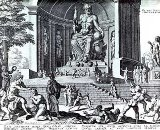
The Statue of Zeus at Olympia was a giant seated figure, about 13 m (42 ft) tall, made by the Greek sculptor Phidias in circa 430-422 BC at the sanctuary of Olympia, Greece and erected in the Temple of Zeus there. A chryselephantine sculpture of plated ivory and gold panels over a wooden framework, it represented the god Zeus sitting on an elaborate cedarwood throne ornamented with ebony, ivory, gold, and precious stones, and was regarded as one of the Seven Wonders of the Ancient World until its eventual loss and destruction during the fifth century AD. No copy of the statue has ever been found, and details of its form are known only from ancient Greek descriptions and representations on coins.
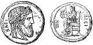
The great seated statue was created by the Greek sculpter Phidias and it was half occupied with the width of the aisle of the temple built to house it. "It seems that if Zeus were to stand up," the geographer Strabo noted early in the 1st century BC, "he would unroof the temple." The Zeus was a chryselephantine sculpture, made of ivory and gold-plated bronze. No copy in marble or bronze has survived, though there are recognizable but approximate versions on coins of nearby Elis and on Roman coins and engraved gems. A very detailed description of the sculpture and its throne was recorded by the traveler Pausanias, in the 2nd century AD. In Zeus' right hand there was a small statue of crowned Nike, goddess of victory, also chryselephantine, and in his left hand, a sceptre inlaid with gold, on which an eagle perched. Titus Livius records that the Roman general Aemilius Paulus, the victor over Macedon, when he beheld the statue, “was moved to his soul, as if he had seen the god in person,” while the 1st century AD Greek orator Dio Chrysostom declared that a single glimpse of the statue would make a man forget all his earthly troubles.
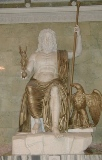 The date of the statue, in the third quarter of the 5th century BC, long a subject of debate, was confirmed archaeologically by the rediscovery and excavation of Phidias' workshop.
According to a legend, when Phidias was asked what inspired him—whether he climbed Mount Olympus to see Zeus, or whether Zeus came down from Olympus so that Pheidias could see him—the artist answered that he portrayed Zeus according to Book One, verses 528 – 530 of Homer's Iliad:
ἦ καὶ κυανέῃσιν ἐπ' ὀφρύσι νεῦσε Κρονίων ἀμβρόσιαι δ' ἄρα χαῖται ἐπερρώσαντο ἄνακτος κρατὸς ἀπ' ἀθανάτοιο μέγαν δ' ἐλέλιξεν Ὄλυμπον. He spoke, the son of Cronos, and nodded his head with the dark brows, and the immortally anointed hair of the great god swept from his divine head, and all Olympos was shaken.
The sculptor also was reputed to have immortalised his eromenos, Pantarkes, by carving "Pantarkes kalos" into the god's little finger, and placing a relief of the boy crowning himself at the feet of the statue.
According to Suetonius, the Roman Emperor Caligula "gave orders that such statues of the gods as were especially famous for their sanctity or for their artistic merit, including that of Zeus at Olympia, should be brought from Greece, in order to remove their heads and put his own in their place." Caligula was assassinated in AD 41. In Rome other interpretations were placed on the phenomenon: according to Suetonius, Caligula's "approaching murder was foretold by many prodigies. The statue of Jupiter at Olympia, which he had ordered to be taken to pieces and moved to Rome, suddenly uttered such a peal of laughter that the scaffolding collapsed and the workmen took to their heels."
The circumstances of its eventual destruction are a source of debate: the 11th-century Byzantine historian Georgios Kedrenos recorded the tradition that it was carried off to Constantinople, where it was destroyed in the great fire of the Lauseion, in AD 475. Others argue that it perished with the temple when it burned in 425. According to Lucian of Samosata in the later 2nd century, "they have laid hands on your person at Olympia, my lord High-Thunderer, and you had not the energy to wake the dogs or call in the neighbours; surely they might have come to the rescue and caught the fellows before they had finished packing up the statue."
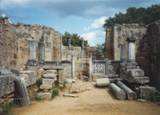 Perhaps the greatest discovery came in 1954–1958 with the excavation of the workshop at Olympia where Phidias created the statue. Tools, terracotta moulds and a cup inscribed "I belong to Pheidias" were found here, just where the traveler Pausanias said the statue of Zeus was constructed. This has enabled archaeologists to re-create the techniques used to make the great work and confirm its date.
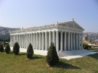 The Temple of Artemis (Greek: Ἀρτεμίσιον, or Artemision), also known less precisely as the Temple of Diana, was a Greek temple dedicated to a goddess Greeks identified as Artemis and was one of the Seven Wonders of the Ancient World. It was located in Ephesus (near the modern town of Selçuk in present-day Turkey), and was completely rebuilt three times before its eventual destruction in 401. Only foundations and sculptural fragments of the latest of the temples at the site remain.
The first sanctuary (temenos) antedated the Ionic immigration by many years, and dates to the Bronze Age. Callimachus, in his Hymn to Artemis, attributed it to the Amazons. In the 7th century BC, the old temple was destroyed by a flood. Its reconstruction began around 550 BC, under the Cretan architect Chersiphron and his son Metagenes, at the expense of Croesus of Lydia: the project took 10 years to complete, only to be destroyed in an act of arson by Herostratus. It was later rebuilt.
Antipater of Sidon, who compiled the list of the Seven Wonders, describes the finished temple:
I have set eyes on the wall of lofty Babylon on which is a road for chariots, and the statue of Zeus by the Alpheus, and the hanging gardens, and the colossus of the Sun, and the huge labour of the high pyramids, and the vast tomb of Mausolus; but when I saw the house of Artemis that mounted to the clouds, those other marvels lost their brilliancy, and I said, "Lo, apart from Olympus, the Sun never looked on aught so grand".
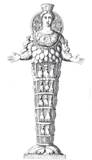 The Temple of Artemis was located near the ancient city of Ephesus, about 50 km south from the modern port city of İzmir, in Turkey. Today the site lies on the edge of the modern town of Selçuk.
The sacred site (temenos) at Ephesus was far older than the Artemision itself. Pausanias was certain that it antedated the Ionic immigration by many years, being older even than the oracular shrine of Apollo at Didyma. He said that the pre-Ionic inhabitants of the city were Leleges and Lydians. Callimachus, in his Hymn to Artemis, attributed the earliest temenos at Ephesus to the Amazons, whose worship he imagines already centered upon an image (bretas) of Artemis, their matron goddess.
Modern archaeology cannot confirm Callimachus's Amazons, but Pausanias's account of the site's antiquity seems well-founded. Before World War I, site excavations by David George Hogarth identified three successive temple buildings. Re-excavations in 1987-88 confirmed that the site was occupied as early as the Bronze Age, with a sequence of pottery finds that extend forward to Middle Geometric times, when the clay-floored peripteral temple was constructed, in the second half of the 8th century BC. The peripteral temple at Ephesus offers the earliest example of a peripteral type on the coast of Asia Minor, and perhaps the earliest Greek temple surrounded by colonnades anywhere.
In the 7th century, a flood destroyed the temple, depositing over half a meter of sand and flotsam over a floor of hard-packed clay. Among the flood debris were the remains of a carved ivory plaque of a griffin and the Tree of Life, apparently North Syrian, and a number of drilled tear-shaped amber drops of elliptical cross-section. These probably once dressed a wooden effigy (xoanon) of the Lady of Ephesus, which must have been destroyed or recovered from the flood. Bammer notes that though the site was prone to flooding, and raised by silt deposits about two metres between the eighth and 6th centuries, and a further 2.4 m between the sixth and the fourth, its continued use "indicates that maintaining the identity of the actual location played an important role in the sacred organization".
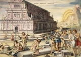 The new temple was sponsored at least in part by Croesus, who founded Lydia's empire and was overlord of Ephesus, and was designed and constructed from around 550 BC by the Cretan architect Chersiphron and his son Metagenes. It was some 115 m (377 ft) long and 46 m (151 ft) wide, supposedly the first Greek temple built of marble. Its peripteral columns stood some 13 m (40 ft) high, in double rows that formed a wide ceremonial passage around the cella that housed the goddess' cult image. Thirty-six of these columns were, according to Pliny, decorated by carvings in relief. A new ebony or blackened grapewood cult statue was sculpted by Endoios, and a naiskos to house it was erected east of the open-air altar.
A rich foundation deposit from this era yielded more than a thousand items, including what may be the earliest coins made from the silver-gold alloy electrum. Fragments of bas-relief on the lowest drums of the temple, preserved in the British Museum, show that the enriched columns of the later temple, of which a few survive (illustration, below right) were versions of this earlier feature. Pliny the Elder, seemingly unaware of the ancient continuity of the sacred site, claims that the new temple's architects chose to build it on marshy ground as a precaution against earthquakes. The temple became an important attraction, visited by merchants, kings, and sightseers, many of whom paid homage to Artemis in the form of jewelry and various goods. It also offered sanctuary to those fleeing persecution or punishment, a tradition linked in myth to the Amazons who twice fled there seeking the goddess' protection from punishment, firstly by Dionysus and later, by Heracles.
In 356 BC, not long after its completion, the temple was destroyed in a vainglorious act of arson by Herostratus, who set fire to the wooden roof-beams, seeking fame at any cost; thus the term herostratic fame. For this outrage, the Ephesians sentenced Herostratus to death and forbade anyone from mentioning his name; but Theopompus later noted it. In Greek and Roman historical tradition, the temple's destruction coincided with the birth of Alexander the Great (around 20/21 July 356 BC). Plutarch remarked that Artemis was too preoccupied with Alexander's delivery to save her burning temple.
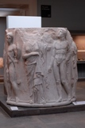 Alexander offered to pay for the temple's rebuilding; the Ephesians tactfully refused, and eventually rebuilt it after his death, at their own expense. Work started in 323 BC and continued for many years. The third temple was larger than the second; 137 m (450 ft) long by 69 m (225 ft) wide and 18 m (60 ft) high, with more than 127 columns. Athenagoras of Athens names Endoeus, a pupil of Daedalus, as sculptor of Artemis' main cult image. Pausanias (c. 2nd century AD) reports another image and altar in the Temple, dedicated to Artemis Protothronia (Artemis "of the first seat") and a gallery of images above this altar, including an ancient figure of Nyx (the primordial goddess of Night) by the sculptor Rhoecus (6th century BC). Pliny describes images of Amazons, the legendary founders of Ephesus and Ephesian Artemis' original protégés, carved by Scopas. Literary sources describe the temple's adornment by paintings, gilded columns of gold and silver, and religious works of renowned Greek sculptors Polyclitus, Pheidias, Cresilas, and Phradmon.
This reconstruction survived some 600 years, and appears multiple times in early Christian accounts of Ephesus. According to the New Testament, the appearance of the first Christian missionary in Ephesus caused locals to fear for the temple's dishonor. The 2nd-century Acts of John includes an apocryphal tale of the temple's destruction: the apostle John prayed publicly in the Temple of Artemis, exorcising its demons and "of a sudden the altar of Artemis split in many pieces... and half the temple fell down," instantly converting the Ephesians, who wept, prayed or took flight. Against this, a Roman edict of 162 AD acknowledges the importance of Artemesion, the annual Ephesian festival to Artemis, and officially extends it from a few holy days over March–April to a whole month, "one of the largest and most magnificent religious festivals in Ephesus' liturgical calendar".
In 268 AD, the Temple was destroyed or damaged in a raid by the Goths, an East Germanic tribe. in the time of emperor Gallienus: "Respa, Veduc and Thuruar, leaders of the Goths, took ship and sailed across the strait of the Hellespont to Asia. There they laid waste many populous cities and set fire to the renowned temple of Diana at Ephesus," reported Jordanes in Getica.
Thereafter it may have been rebuilt, or repaired but this is uncertain, as its later history is highly unclear and the torching of the temple by the Goths may have brought it to a final end. At least some of the stones from the temple were used in construction of other buildings. Some of the columns in Hagia Sophia originally belonged to the temple of Artemis, and the Parastaseis syntomoi chronikai records the re-use of several statues and other decorative elements from the temple, throughout Constantinople.
The main primary sources for the Temple of Artemis at Ephesus are Pliny the Elder's Natural History XXXVI.xxi.95, Pomponius Mela i:17, and Plutarch's Life of Alexander III.5 (referencing the burning of the Artemiseum).
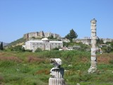 After sixty years of searching, the site of the temple was rediscovered in 1869 by an expedition led by John Turtle Wood and sponsored by the British Museum. These excavations continued until 1874. A few further fragments of sculpture were found during the 1904–1906 excavations directed by David George Hogarth. The recovered sculptured fragments of the 4th-century rebuilding and a few from the earlier temple, which had been used in the rubble fill for the rebuilding, were assembled and displayed in the "Ephesus Room" of the British Museum.
Today the site of the temple, which lies just outside Selçuk, is marked by a single column constructed of dissociated fragments discovered on the site.
The archaic temeton beneath the later Temples clearly housed some form of "Great Goddess" but nothing is known of her cult. The literary accounts that describe it as "Amazonian" refer to the later founder-myths of Greek emigres who developed the cult and temple of Artemis Ephesia. The wealth and splendour of temple and city were taken as evidence of Artemis Ephesia's power, and were the basis for her local and international prestige: despite the successive traumas of Temple destruction, each rebuilding – a gift and honour to the goddess – brought further prosperity.
Artemis' shrines, temples and festivals (Artemisia) could be found throughout the Greek world, but Ephesian Artemis was unique. The Ephesians considered her theirs, and resented any foreign claims to her protection. Once Persia ousted and replaced their Lydian overlord Croesus, the Ephesians played down his contribution to the Temple's restoration. On the whole, the Persians dealt fairly with Ephesus, but removed some religious artifacts from Artemis' Temple to Sardis and brought Persian priests into her Ephesian cult; this was not forgiven. When Alexander conquered the Persians, his offer to finance the Temple's second rebuilding was politely but firmly refused. Ephesian Artemis lent her city's diplomacy a powerful religious edge.
Under Hellenic rule, and later, under Roman rule, the Ephesian Artemisia festival was increasingly promoted as a key element in the pan-Hellenic festival circuit. It was part of a definitively Greek political and cultural identity, essential to the economic life of the region, and an excellent opportunity for young, unmarried Greeks of both sexes to seek out marriage partners. Games, contests and theatrical performances were held in the goddess' name, and Pliny describes her procession as a magnificent crowd-puller; it was shown in one of Apelles' best paintings, which depicted the goddess' image carried through the streets and surrounded by maidens. In the Roman Imperial era, the emperor Commodus lent his name to the festival games, and might have sponsored them.
From the Greek point of view Ephesian Artemis is a distinctive form of their goddess Artemis. In Greek cult and myth, Artemis is the twin of Apollo, a virgin huntress who supplanted the Titan Selene as goddess of the Moon. At Ephesus, a goddess whom the Greeks associated with Artemis was venerated in an archaic, certainly pre-Hellenic cult image that was carved of wood and kept decorated with jewelry. Robert Fleischer identified as decorations of the primitive xoanon the changeable features that since Minucius Felix and Jerome's Christian attacks on pagan popular religion had been read as many breasts or "eggs" — denoting her fertility (others interpret the objects to represent the testicles of sacrificed bulls that would have been strung on the image, with similar meaning). Most similar to Near-Eastern and Egyptian deities, and least similar to Greek ones, her body and legs are enclosed within a tapering pillar-like term, from which her feet protrude. On the coins minted at Ephesus, the apparently many-breasted goddess wears a mural crown (like a city's walls), an attribute of Cybele (see polos). On the coins she rests either arm on a staff formed of entwined serpents or of a stack of ouroboroi, the eternal serpent with its tail in its mouth. Something the Lady of Ephesus had in common with Cybele was that each was served by temple slave-women, or hierodules (hiero "holy", doule "female slave"), under the direction of a priestess who inherited her role, attended by a college of eunuch priests called "Megabyzoi" and also by young virgins (korai).
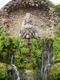 The "eggs" or "breasts" of the Lady of Ephesus, it now appears, must be the iconographic descendants of the amber gourd-shaped drops, elliptical in cross-section and drilled for hanging, that were rediscovered in the excavations of 1987-88; they remained in situ where the ancient wooden cult figure of the Lady of Ephesus had been caught by an 8th-century flood (see History below). This form of breast-jewelry, then, had already been developed by the Geometric Period. A hypothesis offered by Gerard Seiterle, that the objects in Classical representations represented bulls' scrotal sacs cannot be maintained.
A votive inscription mentioned by Florence Mary Bennett, which dates probably from about the 3rd century BC, associates Ephesian Artemis with Crete: "To the Healer of diseases, to Apollo, Giver of Light to mortals, Eutyches has set up in votive offering [a statue of] the Cretan Lady of Ephesus, the Light-Bearer."
The Greek habits of syncretism assimilated all foreign gods under some form of the Olympian pantheon familiar to them— in interpretatio graeca— and it is clear that at Ephesus, the identification with Artemis that the Ionian settlers made of the "Lady of Ephesus" was slender. The Christian approach was at variance with the tolerant syncretistic approach of pagans to gods who were not theirs. A Christian inscription at Ephesus suggests why so little remains at the site:
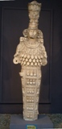 "Destroying the delusive image of the demon Artemis, Demeas has erected this symbol of Truth, the God that drives away idols, and the Cross of priests, deathless and victorious sign of Christ."
The assertion that the Ephesians thought that their cult image had fallen from the sky, though it was a familiar origin-myth at other sites, is only known at Ephesus from Acts 19:35:
"What man is there that knoweth not how that the city of the Ephesians is a worshipper of the great goddess Diana, and of the [image] which fell down from Jupiter?"
Lynn LiDonnici observes that modern scholars are likely to be more concerned with origins of the Lady of Ephesus and her iconology than her adherents were at any point in time, and are prone to creating a synthetic account of the Lady of Ephesus by drawing together documentation that ranges over more than a millennium in its origins, creating a falsified, unitary picture, as of an unchanging icon.
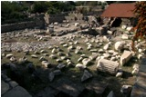 The Mausoleum at Halicarnassus or Tomb of Mausolus (in Greek, Μαυσωλεῖον τῆς Ἁλικαρνασσοῦ) was a tomb built between 353 and 350 BC at Halicarnassus (present Bodrum, Turkey) for Mausolus, a satrap in the Persian Empire, and Artemisia II of Caria, who was both his wife and his sister. The structure was designed by the Greek architects Satyros and Pythius of Priene.
The Mausoleum stood approximately 45 m (148 ft) in height, and each of the four sides was adorned with sculptural reliefs created by each one of four Greek sculptors - Leochares, Bryaxis, Scopas of Paros and Timotheus. The finished structure of the mauloseum was considered to be such an aesthetic triumph that Antipater of Sidon identified it as one of his Seven Wonders of the Ancient World.
The word mausoleum has now come to be used generically for an above-ground tomb.
In the 4th Century BC, Halicarnassus was the capital of a small regional kingdom in the coast of Asia Minor. In 377 BC the ruler of the region, Hecatomnus of Milas, died and left the control of the kingdom to his son, Mausolus. Hecatomnus, a local satrap under the Persians, took control of several of the neighboring cities and districts. After Artemisia and Mausolus, he had several other daughters and sons: Ada (adopted mother of Alexander the Great), Idrieus and Pixodarus. Mausolus extended its territory as far as the southwest coast of Anatolia. Artemisia and Mausolus ruled from Halicarnassus over the surrounding territory for twenty-four years. Mausolus, although descended from local people, spoke Greek and admired the Greek way of life and government. He founded many cities of Greek design along the coast and encouraged Greek democratic traditions
Mausolus decided to build a new capital; a city as safe from capture as it was magnificent to be seen. He chose the city of Halicarnassus. If Mausolus' ships blocked a small channel, they could keep all enemy warships out. His workmen deepened the city's harbor and used the dragged sand to make protecting breakwaters in front of the channel. On land they paved streets and squares, and built houses for ordinary citizens. And on one side of the harbor they built a massive fortified palace for Mausolus, positioned to have clear views out to sea and inland to the hills - places from where enemies could attack.
On land, the workmen also built walls and watchtowers, a Greek–style theatre and a temple to Ares - the Greek god of war.
Artemisia and Mausolus spent huge amounts of tax money to embellish the city. They commissioned statues, temples and buildings of gleaming marble. On a hill overlooking the city Artemisia planned to place a resting place for her body, and her husband's, after their death.
In 353 BC, Mausolus died, leaving Artemisia to rule alone. As a tribute to him, she decided to build him a tomb so famous that Mausolus's name is now the eponym for all stately tombs, in the word mausoleum. The construction was also so beautiful and unique it became one of the Seven Wonders of the Ancient World.
Artemisia lived for only two years after the death of her husband. The urns with their ashes were placed in the yet unfinished tomb. As a form of sacrifice ritual the bodies of a large number of dead animals were placed on the stairs leading to the tomb, and then the stairs were filled with stones and rubble, sealing the access. According to the historian Pliny the Elder, the craftsmen decided to stay and finish the work after the death of their patron "considering that it was at once a memorial of his own fame and of the sculptor's art."
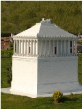 Mausolus decided to build a new capital; a city as safe from capture as it was magnificent to be seen. He chose the city of Halicarnassus. If Mausolus' ships blocked a small channel, they could keep all enemy warships out. His workmen deepened the city's harbor and used the dragged sand to make protecting breakwaters in front of the channel. On land they paved streets and squares, and built houses for ordinary citizens. And on one side of the harbor they built a massive fortified palace for Mausolus, positioned to have clear views out to sea and inland to the hills — places from where enemies could attack.
On land, the workmen also built walls and watchtowers, a Greek–style theatre and a temple to Ares — the Greek god of war.
Artemisia and Mausolus spent huge amounts of tax money to embellish the city. They commissioned statues, temples and buildings of gleaming marble. On a hill overlooking the city Artemisia planned to place a resting place for her body, and her husband's, after their death.
In 353 BC, Mausolus died, leaving Artemisia to rule alone. As a tribute to him, she decided to build him a tomb so famous that Mausolus's name is now the eponym for all stately tombs, in the word mausoleum. The construction was also so beautiful and unique it became one of the Seven Wonders of the Ancient World.
Artemisia lived for only two years after the death of her husband. The urns with their ashes were placed in the yet unfinished tomb. As a form of sacrifice ritual the bodies of a large number of dead animals were placed on the stairs leading to the tomb, and then the stairs were filled with stones and rubble, sealing the access. According to the historian Pliny the Elder, the craftsmen decided to stay and finish the work after the death of their patron "considering that it was at once a memorial of his own fame and of the sculptor's art."
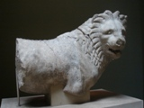 Artemisia spared no expense in building the tomb. She sent messengers to Greece to find the most talented artists of the time. These included Scopas, the man who had supervised the rebuilding of the Temple of Artemis at Ephesus. The famous sculptors were (in the Vitruvius order): Leochares, Bryaxis, Scopas and Timotheus, as well as hundreds of other craftsmen.
The tomb was erected on a hill overlooking the city. The whole structure sat in an enclosed courtyard. At the center of the courtyard was a stone platform on which the tomb sat. A stairway flanked by stone lions led to the top of the platform, which bore along its outer walls many statues of gods and godesses. At each corner, stone warriors mounted on horseback guarded the tomb. At the center of the platform, the marble tomb rose as a square tapering block to one-third of the Mausoleum's 45 m (148 ft) height. This section was covered with bas-reliefs showing action scenes, including the battle of the centaurs with the lapiths and Greeks in combat with the Amazons, a race of warrior women.
On the top of this section of the tomb thirty-six slim columns, ten per side, with each corner sharing one column between two sides; rose for another third of the height. Standing between each [pair of] column[s] was a statue. Behind the columns was a solid cella-like block that carried the weight of the tomb's massive roof. The roof, which comprised most of the final third of the height, was pyramidal. Perched on the top was a quadriga: four massive horses pulling a chariot in which rode images of Mausolus and Artemisia.
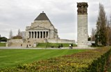 Modern historians have pointed out that two years would not be enough time to decorate and build such an extravagant building. Therefore, it is believed that construction was begun by Mausolus before his death or continued by the next leaders. The Mausoleum of Halicarnassus resembled a temple and the only way to tell the difference was its slightly higher outer walls. The Mausoleum was in the Greek-dominated area of Halicarnassus, which in 353 was controlled by the Persian Empire. According to the Roman architect Vitruvius, it was built by Satyros and Pytheus who wrote a treatise about it; this treatise is now lost. Pausanias adds that the Romans considered the Mausoleum one of the great wonders of the world and it was for that reason that they called all their magnificent tombs mausolea, after it. It is unknown exactly when and how the Mausoleum came to ruin, but according to Eustathius in the 12th century on his commentary of the Iliad, "it was and is a wonder". We are therefore led to believe that the building was ruined, probably by an earthquake, between this period and 1402, when the Knights of St. John of Jerusalem arrived and recorded that it was in ruins.
Many of the stones from these ruins were then used by the knights to fortify their castle of Bodrum; they also recovered bas-reliefs with which they decorated the new building. Much of the marble was burned into lime. In 1846 Lord Stratford de Redcliffe obtained permission to remove these reliefs from the Bodrum.
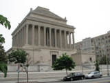 At the original site, all that remained by the 19th century were the foundations and some broken sculptures. This site was originally indicated by Professor Donaldson and was discovered definitively by Mr. Charles Newton, after which an expedition was sent by the British government. The expedition lasted 3 years and ended in the sending of the remaining marbles. At some point before or after this, grave robbers broke into and destroyed the underground burial chamber, but in 1972 there was still enough of it remaining to determine a layout of the chambers when they were excavated.
This monument was ranked the seventh wonder of the world by the ancients, not because of its size or strength but because of the beauty of its design and how it was decorated with sculpture or ornaments. The mausoleum was Halicarnassus' principal architectural monument, standing in a dominant position on rising ground above the harbor.”
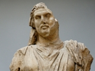 Much of the information we have gathered about the Mausoleum and its structure has come from the Roman polymath Pliny the Elder. He wrote some basic facts about the architecture and some dimensions. The building was rectangular, not square, surrounded by a colonnade of thirty-six columns. There was a pyramidal superstructure receding in twenty four steps to the summit. On top there were 4 horse chariots of marble. The building was accented with both sculptural friezes and free standing figures. "The free standing figures were arranged on 5 or 6 different levels.” We are now able to justify that Pliny’s knowledge came from a work written by the architect. It is clear that Pliny did not grasp the design of the mausoleum fully which creates problems in recreating the structure. However he does state many facts which help the reader recreate pieces of the puzzle. Other writings by Pausanias, Strabo, and Vitruvius also help us to gather more information about the Mausoleum. These Ancient authors describe the building's appearance and gave dimensions. According to Pliny the mausoleum was 63 ft. north and south, shorter on other fronts, 411 ft. circumference, and 25 cubits (37 ft. 6 in.) in heights. It was surrounded by 36 columns. They called this part the pteron. Above the pteron there was a pyramid on top with 24 steps and equal in height to the lower part. The height of the whole work was 140 ft. The only other author that gives the dimensions of the Mausoleum is Hyginus a grammarian in the time of Augustus. He describes the monument as built with shining stones, 80 ft high and 1340 ft in circumference. He likely meant cubits which would match Pliny’s dimensions exactly but this text is largely considered corrupt and is of little importance. We learn from Vitruvius that Satyrus and Phytheus wrote a description of their work which Pliny likely read. Pliny likely wrote down these dimensions without thinking about the form of the building. Much of the information we have gathered about the Mausoleum and its structure has come from the Roman polymath Pliny the Elder. He wrote some basic facts about the architecture and some dimensions. The building was rectangular, not square, surrounded by a colonnade of thirty-six columns. There was a pyramidal superstructure receding in twenty four steps to the summit. On top there were 4 horse chariots of marble. The building was accented with both sculptural friezes and free standing figures. "The free standing figures were arranged on 5 or 6 different levels.” We are now able to justify that Pliny’s knowledge came from a work written by the architect. It is clear that Pliny did not grasp the design of the mausoleum fully which creates problems in recreating the structure. However he does state many facts which help the reader recreate pieces of the puzzle. Other writings by Pausanias, Strabo, and Vitruvius also help us to gather more information about the Mausoleum. These Ancient authors describe the building's appearance and gave dimensions. According to Pliny the mausoleum was 63 ft. north and south, shorter on other fronts, 411 ft. circumference, and 25 cubits (37 ft. 6 in.) in heights. It was surrounded by 36 columns. They called this part the pteron. Above the pteron there was a pyramid on top with 24 steps and equal in height to the lower part. The height of the whole work was 140 ft. The only other author that gives the dimensions of the Mausoleum is Hyginus a grammarian in the time of Augustus. He describes the monument as built with shining stones, 80 ft high and 1340 ft in circumference. He likely meant cubits which would match Pliny’s dimensions exactly but this text is largely considered corrupt and is of little importance. We learn from Vitruvius that Satyrus and Phytheus wrote a description of their work which Pliny likely read. Pliny likely wrote down these dimensions without thinking about the form of the building.
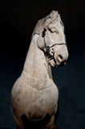 A number of statues were found slightly larger than life size, either 5 ft. 0 in. or 5 ft. 3 in. in length; these were 20 lion statues. Another important find was the depth on the rock on which the building stood. This rock was excavated to 8 or 9 ft. deep over an area 107 by 127 ft. The sculptures on the north were created by Scopas, the ones on the east Bryaxis, on the south Timotheus and on the west Leochares. The Mausoleum was adorned with many great and beautiful sculptures. Some of these sculptures have been lost or only fragments have been found. Several of the statues' original placements are only known through historical accounts. The great figures of Mausolus and Artemisia stood in the chariot at the top of the pyramid. The detached equestrian groups are placed at the corners of the sub podium. The semi-colossal female heads they may have belonged to the acroteria of the two gables which may have represented the six Carian towns incorporated in Halicarnassus. Work still continues today as groups continue to excavate and research the mausoleum’s priceless pieces of art.
In the 19th century a British consul obtained several of the statues from Bodrum Castle; these now reside in the British Museum. In 1852 the British Museum sent the archaeologist Charles Thomas Newton to search for more remains of the Mausoleum. He had a difficult job. He didn't know the exact location of the tomb, and the cost of buying up all the small parcels of land in the area to look for it would have been astronomical. Instead Newton studied the accounts of ancient writers like Pliny to obtain the approximate size and location of the memorial, then bought a plot of land in the most likely location. Digging down, Newton explored the surrounding area through tunnels he dug under the surrounding plots. He was able to locate some walls, a staircase, and finally three of the corners of the foundation. With this knowledge, Newton was able to determine which plots of land he needed to buy.
Newton then excavated the site and found sections of the reliefs that decorated the wall of the building and portions of the stepped roof. Also discovered was a broken stone chariot wheel some 2 m (6 ft 7 in) in diameter, which came from the sculpture on the Mausoleum's roof. Finally, he found the statues of Mausolus and Artemisia that had stood at the pinnacle of the building. In October 1857 Newton carried blocks of marble from this site by the HMS Supply and landed them in Malta. These blocks were used for the construction of a new dock in Malta for the Royal Navy. Today this dock is known at Dock No. 1 in Cospicua, but the building blocks are hidden from view, submerged in Dockyard Creek in the Grand Harbour.
From 1966 to 1977, the Mausoleum was thoroughly researched by Prof. Kristian Jeppesen of Aarhus University, Denmark. He has produced a six-volume monograph, The Maussolleion at Halikarnassos.
The beauty of the Mausoleum was not only in the structure itself, but in the decorations and statues that adorned the outside at different levels on the podium and the roof: statues of people, lions, horses, and other animals in varying scales. The four Greek sculptors who carved the statues: Bryaxis, Leochares, Scopas and Timotheus were each responsible for one side. Because the statues were of people and animals, the Mausoleum holds a special place in history, as it was not dedicated to the gods of Ancient Greece.
Today, the massive castle of the Knights of Malta still stands in Bodrum, and the polished stone and marble blocks of the Mausoleum can be spotted built into the walls of the structure. At the site of the Mausoleum, only the foundation remains, and a small museum. Some of the surviving sculptures at the British Museum include fragments of statues and many slabs of the frieze showing the battle between the Greeks and the Amazons. There the images of Mausolus and his queen watch over the few broken remains of the beautiful tomb she built for him.
Modern buildings based upon the Mausoleum of Mausolus include the National Newark Building in Newark, New Jersey, Grant's Tomb and 26 Broadway in New York City, Los Angeles City Hall, the Shrine of Remembrance in Melbourne, Australia, the spire of St. George's Church, Bloomsbury in London, the Indiana War Memorial (and in turn Chase Tower) in Indianapolis, the Ancient Accepted Scottish Rite Southern Jurisdiction's headquarters, the House of the Temple in Washington D.C., the Civil Courts Building in St. Louis, and the Soldiers and Sailors Memorial in Pittsburgh.
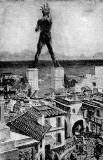 The Colossus of Rhodes was a statue of the Greek Titan Helios, erected in the city of Rhodes on the Greek island of Rhodes by Chares of Lindos between 292 and 280 BC. It is considered one of the Seven Wonders of the Ancient World. It was constructed to celebrate Rhodes' victory over the ruler of Cyprus, Antigonus I Monophthalmus, whose son unsuccessfully besieged Rhodes in 305 BC. Before its destruction in the earthquake of 226 BC, the Colossus of Rhodes stood over 30 meters (107 ft) high, making it one of the tallest statues of the ancient world.
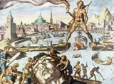 In the late 4th century BC, Rhodes, allied with Ptolemy I of Egypt prevented a massive invasion staged by their common enemy, Antigonus I Monophthalmus.
In 304 BC a relief force of ships sent by Ptolemy arrived, and Antigonus's army abandoned the siege, leaving most of their siege equipment. To celebrate their victory, the Rhodians sold the equipment left behind for 300 talents and decided to use the money to build a colossal statue of their patron god, Helios. Construction was left to the direction of Chares, a native of Lindos in Rhodes, who had been involved with large-scale statues before. His teacher, the sculptor Lysippos, had constructed a 22 meter (70 ft) high bronze statue of Zeus at Tarentum.
Ancient accounts, which differ to some degree, describe the structure as being built with iron tie bars to which brass plates were fixed to form the skin. The interior of the structure, which stood on a 15 meter (50 foot) high white marble pedestal near the Mandraki harbor entrance, was then filled with stone blocks as construction progressed. Other sources place the Colossus on a breakwater in the harbor. The statue itself was over 30 meters (98.4 ft) tall. Much of the iron and bronze was reforged from the various weapons Demetrius's army left behind, and the abandoned second siege tower may have been used for scaffolding around the lower levels during construction. Upper portions were built with the use of a large earthen ramp. During the building, workers would pile mounds of dirt on the sides of the colossus. Upon completion all of the dirt was removed and the colossus was left to stand alone. After twelve years, in 280 BC, the statue was completed. Preserved in Greek anthologies of poetry is what is believed to be the genuine dedication text for the Colossus.
To you, o Sun, the people of Dorian Rhodes set up this bronze statue reaching to Olympus, when they had pacified the waves of war and crowned their city with the spoils taken from the enemy. Not only over the seas but also on land did they kindle the lovely torch of freedom and independence. For to the descendants of Herakles belongs dominion over sea and land.
Modern engineers have put forward a plausible hypothesis for the statue construction, based on the technology of those days (which was not based on the modern principles of earthquake engineering), and the accounts of Philo and Pliny who both saw and described the remains.
The base pedestal was at least 60 feet (18 m) in diameter and either circular or octagonal. The feet were carved in stone and covered with thin bronze plates riveted together. Eight forged iron bars set in a radiating horizontal position formed the ankles and turned up to follow the lines of the legs while becoming progressively smaller. Individually cast curved bronze plates 60 inches (1,500 mm) square with turned in edges were joined together by rivets through holes formed during casting to form a series of rings. The lower plates were 1-inch (25 mm) in thickness to the knee and 3/4 inch thick from knee to abdomen, while the upper plates were 1/4 to 1/2 inch thick except where additional strength was required at joints such as the shoulder, neck, etc. The legs would need to be filled at least to the knees with stones for stability. Accounts described earthen mounds used to aid construction; however, to reach the top of the statue would have required a mound 300 feet (91 m) in diameter, which exceeded the available land area, so modern engineers have proposed that the abandoned siege towers stripped down would have made efficient scaffolding.
A computer simulation of this construction indicated that an earthquake would have caused a cascading failure of the rivets, causing the statue to break up at the joints while still standing instead of breaking after falling to the ground, as described in second hand accounts. The arms would have been first to separate, followed by the legs. The knees were less likely to break and the ankles' survival would have depended on the quality of the workmanship.
The statue stood for 56 years until Rhodes was hit by the 226 BCE Rhodes earthquake, when significant damage was also done to large portions of the city, including the harbor and commercial buildings, which were destroyed. The statue snapped at the knees and fell over on to the land. Ptolemy III offered to pay for the reconstruction of the statue, but the oracle of Delphi made the Rhodians afraid that they had offended Helios, and they declined to rebuild it.
The remains lay on the ground as described by Strabo (xiv.2.5) for over 800 years, and even broken, they were so impressive that many traveled to see them. Pliny the Elder remarked that few people could wrap their arms around the fallen thumb and that each of its fingers was larger than most statues.
In 654, an Arab force under Muslim caliph Muawiyah I captured Rhodes, and according to the chronicler Theophanes the Confessor, the remains were sold to a "Jewish merchant of Edessa". The buyer had the statue broken down, and transported the bronze scrap on the backs of 900 camels to his home. There is compelling evidence that long before the Arab invasion all traces of the Colossus had already disappeared. The stereotypical Arab destruction and the purported sale to a Jew possibly originated as a powerful metaphor for Nebuchadnezzar's dream of the destruction of a great and awesome statue, and would have been understood by any 7th century monk as evidence for the coming apocalypse. The same story is recorded by Barhebraeus, writing in Syriac in the 13th century in Edessa (see E.A. Wallis Budge, The Chronography of Gregory Abu'l-Faraj, vol I, p. 98, APA – Philo Press, Amsterdam, 1932): (After the Arab pillage of Rhodes) "And a great number of men hauled on strong ropes which were tied round the brass Colossus which was in the city and pulled it down. And they weighed from it three thousand loads of Corinthian brass, and they sold it to a certain Jew from Emesa" (the Syrian city of Homs). Theophanes is the sole source of this account and all other sources can be traced to him.
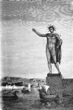 The harbor-straddling Colossus was a figment of medieval imaginations based on the dedication text's mention of "over land and sea" twice. Many older illustrations (above) show the statue with one foot on either side of the harbor mouth with ships passing under it: "...the brazen giant of Greek fame, with conquering limbs astride from land to land..." ("The New Colossus", a poem engraved on a bronze plaque and mounted inside the Statue of Liberty in 1903). Shakespeare's Cassius in Julius Caesar (I,ii,136–38) says of Caesar:
Why man, he doth bestride the narrow world
Like a Colossus, and we petty men
Walk under his huge legs and peep about
To find ourselves dishonorable graves
Shakespeare alludes to the Colossus also in Troilus and Cressida (V.5) and in Henry IV, Part 1 (V.1).
While these fanciful images feed the misconception, the mechanics of the situation reveal that the Colossus could not have straddled the harbor as described in Lemprière's Classical Dictionary. If the completed statue had straddled the harbor, the entire mouth of the harbor would have been effectively closed during the entirety of the construction; nor would the ancient Rhodians have had the means to dredge and re-open the harbor after construction. The statue fell in 224 BC: if it had straddled the harbor mouth, it would have entirely blocked the harbor. Also, since the ancients would not have had the ability to remove the entire statue from the harbor, it would not have remained visible on land for the next 800 years, as discussed above. Even neglecting these objections, the statue was made of bronze, and an engineering analysis proved that it could not have been built with its legs apart without collapsing from its own weight. Many researchers have considered alternative positions for the statue which would have made it more feasible for actual construction by the ancients.
Media reports in 1989 initially suggested that large stones found on the seabed off the coast of Rhodes might have been the remains of the Colossus; however this theory was later shown to be without merit.
Another theory published in an article in 2008 by Ursula Vedder suggests that the Colossus was never in the port, but rather was part of the Acropolis of Rhodes, on a hill today named Monte Smith, which overlooks the port area. The temple on top of Monte Smith has traditionally thought to have been devoted to Apollo, but according to Vedder, it would have been a Helios sanctuary. The enormous stone foundations at the temple site, the function of which is not definitively known by modern scholars, are proposed by Vedder to have been the supporting platform of the Colossus.
The design, posture and dimensions of the Statue of Liberty in New York Harbor are based on what the Colossus was thought by engineers in the late 19th century to have looked like. There is a famous reference to the Colossus in the sonnet "The New Colossus" by Emma Lazarus, written in 1883 and inscribed on a plaque located inside the pedestal of the Statue of Liberty:
Not like the brazen giant of Greek fame,
With conquering limbs astride from land to land;
Here at our sea-washed, sunset gates shall stand
A mighty woman with a torch, whose flame
Is the imprisoned lightning, and her name
Mother of Exiles. From her beacon-hand
Glows world-wide welcome; her mild eyes command
The air-bridged harbor that twin cities frame.
"Keep, ancient lands, your storied pomp!" cries she
With silent lips. "Give me your tired, your poor,
Your huddled masses yearning to breathe free,
The wretched refuse of your teeming shore.
Send these, the homeless, tempest-tost to me,
I lift my lamp beside the golden door!"
There has been much debate as to whether to rebuild the Colossus. Those in favor say it would boost tourism in Rhodes greatly, but those against construction say it would cost too large an amount (over 100 million euro). This idea has been revived many times since it was first proposed in 1970, but work has not yet started because of lack of funding.
In November 2008, it was announced that the Colossus of Rhodes was to be rebuilt. According to Dimitris Koutoulas, who is heading the project in Greece, rather than reproducing the original Colossus, the new structure will be a, "highly, highly innovative light sculpture, one that will stand between 60 and 100 metres tall so that people can physically enter it." The project is expected to cost up to €200m which will be provided by international donors and the German artist Gert Hof. The new Colossus will adorn an outer pier in the harbour area of Rhodes, where it will be visible to passing ships. Koutoulas said, "Although we are still at the drawing-board stage, Gert Hof's plan is to make it the world's largest light installation, a structure that has never before been seen in any place of the world."
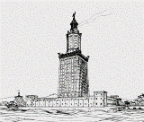 The Lighthouse of Alexandria, sometimes called the Pharos of Alexandria (in Ancient Greek, ὁ Φάρος της Ἀλεξανδρείας), was a lofty tower built by the Ptolemaic Kingdom between 280 and 247 BC on the coastal island of Pharos at Alexandria, Egypt for the purpose of guiding sailors into the port.
With a height variously estimated at somewhere between 393 and 450 ft (120 and 140 m), it was one of the tallest man-made structures on Earth for many centuries, and was regarded as one of the Seven Wonders of the Ancient World. Badly damaged by three earthquakes between 956 and 1323, it then became an abandoned ruin. It was the third longest surviving ancient wonder (after the Mausoleum at Halicarnassus and the still extant Great Pyramid of Giza) until in 1480 the last of its remnant stones were used to build the Citadel of Qaitbay on the site. In 1994, French archeologists discovered some remains of the lighthouse on the floor of Alexandria's Eastern Harbour.
Pharos was a small island just off the coast of the Nile Delta's western edge. In 332 BC when Alexander the Great founded the city of Alexandria on an isthmus opposite to Pharos, he caused the island to be united to the coast by a mole nearly a mile long (1260 m) called the Heptastadion ("seven stadia"—a stadium was a Greek unit of length measuring approximately 180 m). The east side of the mole became the Great Harbour, now an open bay; on the west side lay the port of Eunostos, with its inner basin Kibotos, now vastly enlarged to form the modern harbour. Today's city development lying between the present Grand Square and the modern Ras al-Tiin quarter is built on the silt which gradually widened and obliterated this mole, and Ras al-Tiin represents all that is left of the island of Pharos, the site of the actual lighthouse at its eastern point having been weathered away by the sea.
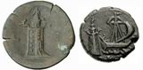 The lighthouse was constructed in the 3rd century BC. After Alexander the Great died of a fever at age 32, the first Ptolemy (Ptolemy I Soter) announced himself king in 305 BC, and commissioned its construction shortly thereafter. The building was finished during the reign of his son, the second Ptolemy (Ptolemy II Philadelphus). It took 12 years to complete, at a total cost of 800 talents, and served as a prototype for all later lighthouses in the world. The light was produced by a furnace at the top and the tower was said to have been built mostly with solid blocks of limestone. Strabo reported that Sostratus had a dedication inscribed in metal letters to the "Saviour Gods". Later Pliny the Elder wrote that Sostratus was the architect, which is disputed. In the second century AD the satirist Lucian wrote that Sostratus inscribed his name under plaster bearing the name of Ptolemy. This was so that when the plaster with Ptolemy's name fell off, Sostratus's name would be visible in the stone.
The fullest description of the lighthouse comes from the Arab traveller Abou Haggag Youssef Ibn Mohammed el-Balawi el-Andaloussi, who visited the structure in 1165 AD. His description runs:
The Pharos rises at the end of the island. The building is square, about 8.5 metres (28 ft) each side. The sea surrounds the Pharos except on the east and south sides. This platform measures, along its sides, from the tip, down to the foot of the Pharos walls, 6.5 metres (21 ft) in height. However, on the sea side, it is larger because of the construction and is steeply inclined like the side of a mountain. As the height of the platform increases towards the walls of the Pharos its width narrows until it arrives at the measurements above. ... The doorway to the Pharos is high up. A ramp about 183 metres (600 ft) long used to lead up to it. This ramp rests on a series of curved arches; my companion got beneath one of the arches and stretched out his arms but he was not able to reach the sides. There are 16 of these arches, each gradually getting higher until the doorway is reached, the last one being especially high.
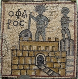 Constructed from large blocks of light-coloured stone, the tower was made up of three stages: a lower square section with a central core, a middle octagonal section, and, at the top, a circular section. At its apex was positioned a mirror which reflected sunlight during the day; a fire was lit at night. Extant Roman coins struck by the Alexandrian mint show that a statue of a Triton was positioned on each of the building's four corners. A statue of Poseidon stood atop the tower during the Roman period.[citation needed] The Pharos' masonry blocks were interlocked, sealed together using molten lead, to withstand the pounding of the waves. According to Ibn el-Andaloussi's description, the base tier rested on massive blocks of red granite.
In 796, the lighthouse may have lost its upper tier, which apparently went without repair for about a century. There are reports that Sultan Ahmad ibn Tulun (868-884) then built a mosque with a dome in place of the upper tier, but this seems to conflict with travelling geographer Muhammad al-Idrisi's report that the structure still operated as a lighthouse on his visit in 1115 AD.
The lighthouse was badly damaged in the earthquake of 956, and then again in 1303 and 1323. The two earthquakes in 1303 and 1323 damaged the lighthouse to the extent that the Arab traveler Ibn Battuta reported no longer being able to enter the ruin. Finally the stubby remnant disappeared in 1480, when the then-Sultan of Egypt, Qaitbay, built a medieval fort on the larger platform of the lighthouse site using some of the fallen stone.
French archeologists led by Jean-Yves Empereur discovered remains of the lighthouse in late 1994 on the floor of Alexandria's Eastern Harbour. Some of these remains were brought up and were lying at the harbour on public view at the end of 1995. A Nova (TV series) program chronicled the discovery. Subsequent satellite imaging has revealed further remains. It is possible to go diving and see the ruins. The secretariat of the UNESCO Convention on the Protection of the Underwater Cultural Heritage are currently working with the Government of Egypt on an initiative to add the bay of Alexandria (to include remains of the lighthouse) on a World Heritage List of submerged cultural sites.
Pharos became the etymological origin of the word 'lighthouse' in Greek (φάρος), many Romance languages such as French (phare), Italian and Spanish (faro), Romanian (far) and Portuguese (farol), and even some Slavic languages like Bulgarian (far).
In 2008 it was suggested that the Pharos was the vertical yardstick used in the first precise measurement of the size of the earth.
The lighthouse remains a civic symbol of the city of Alexandria and of the Alexandria Governorate with which the city is more or less coterminous. A stylised representation of the Lighthouse appears on the flag and seal of the Governorate and on many public services of the city, including the seal of Alexandria University.
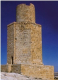
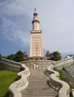 Ahmed Maged of Daily News Egypt wrote in April 2008 that Bassam el Shammaa was appealing to Egyptian authorities to rebuild the Pharos. Attempts had been made to restore the lighthouse thirty years prior, but to no avail. This new restoration would include a shopping mall.